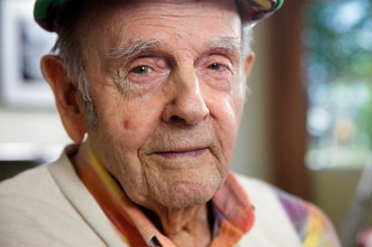

EL CASO BOEDO

¿Quienes puedieron cometer el crimen?
Mario Osvaldo
Nuestro primer testigo es Mario Osvaldo y, como antes mencionado, fue la última persona que vio viva a Boedo y la primera en encontrarlo muerto. Cuando fue interrogado el señor Mario afirma que, una vez que vio a Boedo entrar a su casa, el se fue a dormir pero investigando su casa, se encontró un vaso de café lleno alado de la ventana rota. Cuando se le pregunto por esto, el señor Mario dijo que se había echo un vaso de café pero se olvido de tomarlo cuando vio a Boedo entrar a su casa y se fue a dormir sin tomarlo.
Lucia Castillo
Nuestra segunda sospechosa es Lucia Castillo, ex compañera de Boedo cuando empezó a trabajar en la compañía Jumbo. Al principio, ellos dos eran muy buenos compañeros, pero Boedo se llevo el crédito de la mayor parte de las ventas que ellos habían logrando, haciendo que Boedo ascendiera y Lucia quedara atrás, provocando que, en un ataque de ir, Lucia le juro que lo iba a matar. 5 días antes del asesinato, Lucia y Boedo tuvieron una discusión en su oficina, nadie escucho nada de los que ellos dos discutieron. Estamos esperando a que Lucia regrese de su viaje de negocios para poder interrogarla sobre esta última charla que tuvieron.

Antonio
Antonio es nuestro último sospechoso, y es el más raro de todos. Antonio no vive en el mismo pueblo que Boedo, ni siquiera lo conoce pero, por algún motivo, se encontraba justo el mismo día que ocurrió el asesinato y se lo vio corriendo intentando escapar del pueblo con las manos mojadas, como si se las hubiera acabado de limpiar. Cuando fue interrogado, dijo que vino a visitar a su amigo que vivía aquí pero cuando su padre lo llamo para que volviera, salió corriendo y se cayó en un charco de agua y se mojo las manos. Investigando a fondo, descubrimos que su padre fue engañado por Boedo en comprar uno de sus productos dañados ¿acaso Antonio quiso vengar a su padre? No lo sabemos a ciencia exacta.
¿Suicidio?
A pesar de todas las pistas presentadas y que demuestran los contrario, no se puede quitar la posibilidad que Boedo se haya suicidado, aunque sea extremadamente improbable.